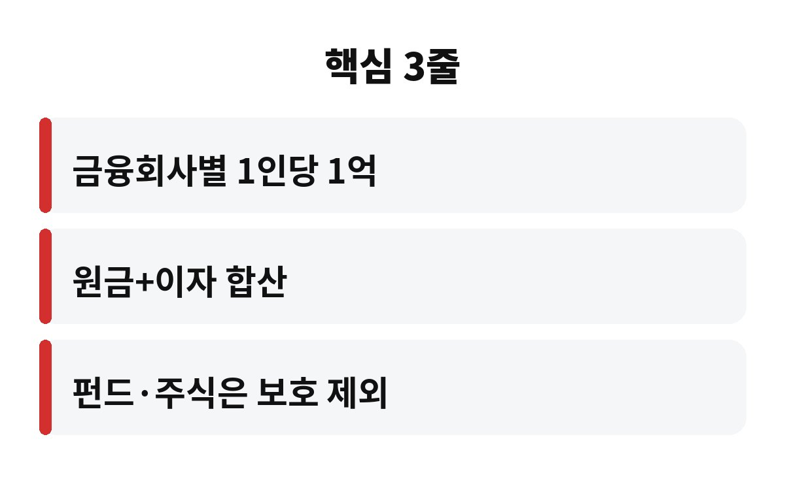

예금자보호 한도는 한 금융회사당 1인 기준 원금과 이자를 합쳐 1억 원까지예요. 은행에 목돈을 맡겨 두신 분이라면 내 돈이 정말 다 보호되는지 궁금하시죠?
예전 5천만 원 기준으로만 알고 계신 분이 아직 많아요. 오늘은 예금자보호 한도에서 사람들이 가장 많이 놓치는 부분을 하나씩 짚어 볼게요.
이자까지 포함해서 1억 원이에요. 여기서 많이들 착각하세요. 원금이 딱 1억이면 이자는 따로 보호받는다고 생각하는데, 실제로는 원금과 이자를 합한 금액이 1억을 넘으면 그 초과분은 보호 대상에서 빠져요.
예를 들어 한 은행에 정기예금 1억 원을 넣었고 이자가 붙어 있다면, 만기에 받을 돈 중 1억을 넘는 부분은 보호가 안 될 수 있어요. 그래서 목돈이 1억에 가까운 분들은 여유를 두고 나눠 넣는 게 안전하죠.
또 하나, 이 한도는 금융회사별로 적용돼요. 같은 은행의 여러 지점이나 여러 통장에 나눠 넣어도 한 은행으로 묶여서 합산된다는 점, 꼭 기억하세요.
저축은행, 증권사, 보험사처럼 예금자보호 대상 금융회사도 모두 금융회사별로 1억 원 기준이 적용돼요. 같은 금융그룹 계열이라도 법인이 다르면 따로 계산하는 게 일반적이에요.
새마을금고는 예금자보호공단이 아니라 자체 기금으로 보호하는 구조예요. 보호 한도 수준은 비슷하게 맞춰져 있지만 운영 주체가 다르니, 가입하기 전에 내 금고가 어떤 제도로 보호되는지 한 번 확인해 보시면 좋아요.
이자를 조금 더 주는 곳일수록 마음이 끌리죠. 하지만 이자 0.2%포인트 때문에 안전 점검을 건너뛰면 나중에 후회할 수 있어요.
아니요, 안 돼요. 예금자보호는 예금과 적금 같은 원금 보장형 금융상품이 대상이에요. 펀드, 주식, 채권, ELS처럼 투자 성격의 상품은 보호 대상이 아니에요.
은행 창구에서 가입했다고 다 예금은 아니라는 점이 함정이에요. 은행에서 파는 펀드나 투자 상품은 예금자보호 대상이 아닐 수 있어서, 가입서류에 '예금자보호 대상 아님' 같은 문구가 있는지 꼭 보세요.
가입 전에 이 세 가지는 직접 확인해 보세요.
| 구분 | 보호 여부 |
| 예금·적금 | 보호 대상(금융회사별 1억 원) |
| 펀드·주식·채권 | 보호 제외 |
| 이자 | 원금과 합산해 1억 원 |

가장 쉬운 방법은 금융회사를 나누는 거예요. 예를 들어 2억 원이 있다면 서로 다른 두 곳에 1억 원씩이 아니라, 이자까지 생각해서 조금 더 여유 있게 세 곳쯤으로 나누는 식이죠.
관리가 번거롭다고요? 맞아요, 귀찮죠. 그래도 내 돈이 안전한지 지켜보는 건 몇 번만 신경 쓰면 되는 일이에요. 만기 달력에 적어 두고 한 번에 점검하면 훨씬 편해요.
그리고 내가 가진 예금이 몇 개 금융회사에 얼마씩 있는지 표로 한 번 정리해 보세요. 의외로 한 곳에 몰려 있는 경우가 많거든요. 가족 명의로 나누어 넣는 것도 방법이지만, 증여세 같은 세금 문제가 생길 수 있으니 이 부분은 꼭 전문가와 상의하세요.
한 가지 더 있어요. 대출이 있는 금융회사에 예금도 같이 넣어 두었다면, 만약의 경우 예금에서 대출금을 먼저 빼고 남은 돈 기준으로 보호 금액이 계산될 수 있어요. 같은 은행에 대출과 예금이 함께 있는 분이라면 이 부분도 한번 떠올려 보세요.
또 입출금 통장에 월급이 쌓여 있는 경우도 많죠. 정기예금만 계산하고 입출금 잔액은 빼먹는 분이 정말 많아요. 같은 은행이라면 입출금 통장, 적금, 예금 잔액이 모두 합쳐서 한도에 들어가니, 연말에 한 번 전체 잔액을 합산해 보시는 걸 추천해요. 이렇게 한 번만 점검해 두면 마음이 훨씬 편해져요.
마지막으로 예금자보호 한도 이야기를 정리하면, 핵심은 금융회사별 1인 1억 원, 원금과 이자 합산, 투자 상품은 제외 이 세 가지예요. 지금 내 통장 중에 한 곳에 1억 가까이 몰려 있는 곳은 없나요?
도움이 되셨다면 구독해 두고 다음 재테크 이야기도 받아 보세요.
※ 일반적인 금융 정보이며 투자 권유가 아닙니다. 제도 내용은 변경될 수 있으니 가입 전 해당 금융회사나 예금보험공사에서 확인하세요.